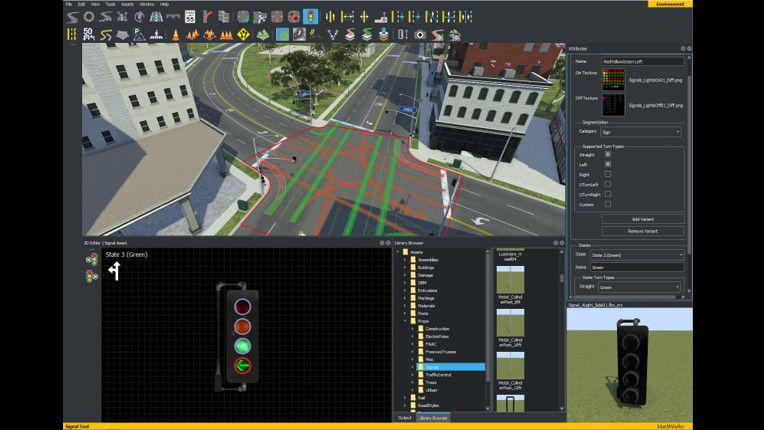
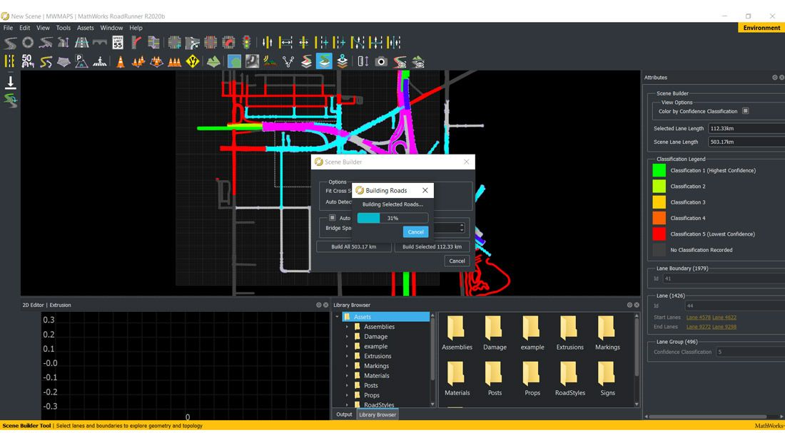
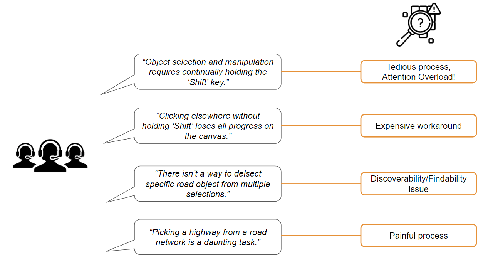
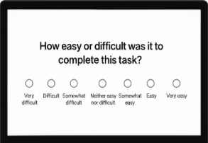
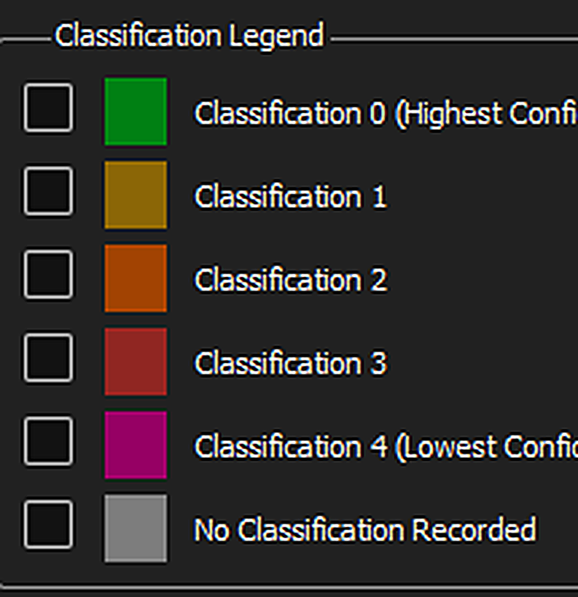

Context & Challenge
Context
RoadRunner is a tool that helps Engineers create 3D driving scenes for testing self-driving and driver-assistance systems. Users load real-world maps into the tool and then pick roads, lanes, and junctions to build scenes for simulation.

The UX Challenge
While CFEs reported that users struggled with road selection and scene creation, the root causes were unknown:
- Were users struggling with conceptual understanding or interaction design?
- Which parts of the workflow caused the most friction for power vs. casual users?
- How could we fix these issues without disrupting existing expert workflows?

My Role & Scope
Discovery
Surfacing workflow breakdown signals
Partnered with CFEs to surface recurring workflow breakdowns from customer interactions and support tickets.
Exploration
Observing at interaction level
Designed moderated usability tests to observe interaction-level frictions in scene creation.
Interpretation
Behavior to root-cause insights
Triangulated behavioral signals (failures, mis-selections, etc.) with SUS / task-ease benchmarks.
Collaboration
Shaping design interventions
Collaborated with Designers and Engineers to translate findings into interaction fixes and selection shortcuts.
Why This Approach?
- Expert users often adapt to poor UX; self-reported data insufficient
- Behavioral observation revealed "invisible" friction missed in CFE interviews
- Triangulation ensured fixes addressed both efficiency and learnability
Methods & Activities
1. CFE Interview + Secondary Research
We started by validating problem signals from CFEs and customer tickets to define research objectives.


2. Moderated Usability Testing
What we captured during the sessions:
Session Setup
Format: 60 min moderated, 5 core tasks
Why This Mix & Method
Why this mix
Casual + power users surfaced friction for both expert efficiency and novice learnability.
Why this method
Moderated sessions observed live behavior, revealing "invisible" friction that self-reported data would miss.

Usability metrics
Task-level difficulty captured task by task (ease ratings, SUS, NPS) so friction could be quantified, not just described.
Task execution & tool interaction
Screen recording followed participants through the 5 core tasks, capturing how they moved through the RoadRunner interface.
Keyboard & mouse interaction
Keystrokes, mouse movement and clicks exposed retries, hesitations and mis-selections that pointed to the underlying friction.
Qualitative responses (open-ended)
Open-ended follow-ups captured the context behind each behavior, turning observed mistakes into explainable causes.
Where Workflows Broke Down and Its Impact
Interaction-level usability breakdowns created downstream effects on customer success, support load, and product adoption.


Post-task ease of use
Mean ease rating captured after each of the five core tasks, read alongside the NPS and SUS benchmarks above.
| Ease rating | Task 1 | Task 2 | Task 3 | Task 4 | Task 5 |
|---|---|---|---|---|---|
| Mean | 3.5 | 4.0 | 3.0 | 2.5 | 3.0 |
Scores below 4.0 are highlighted — no task reached the 4.0 ease benchmark.
From Insights to Roadmap
Partnered with the Marketing & Engineering team to prioritize changes based on user impact, business risk, and implementation effort.
| Fix | User Impact | Business Criticality | Engineering Effort | Priority |
|---|---|---|---|---|
| Road selection shortcuts | High | High core tasks discoverability + CFE dependency | Low UI logic + shortcut mapping | P0 |
| Legend as interactive filter | Medium | Medium discoverability + task time | High state logic + interactions | P2 |
| Color contrast improvements | High | Medium accessibility + visibility | Low CSS / theme tokens | P1 |
Priority driven by user failure frequency + task criticality. Green = favorable (high value / low effort) · amber = moderate · red = costly
Key Findings & Impact
1. Selection Shortcuts
Insight
Three core actions hid behind multi-key shortcuts. Selecting roads required an unintuitive Shift + Ctrl + Left-click (3.5/5 ease), marking waypoints hid behind an undiscoverable Shift + Right-click (2.5/5 ease), and ending route creation didn't match users' mental models from other tools (3/5 ease).
Design change: Replaced hidden multi-key shortcuts with single, discoverable actions — Left click to select, Ctrl + Left click to deselect, Right click to mark waypoints, and Ctrl or Space to end the route.
Impact
↑ Task Completion
Faster, fewer errors
↓ Casual User Errors
Completion without assistance
↓ Mental Load
Smoother UX, lower confusion
Impact validated in follow-up customer interaction & CFE feedback.
2. Legend as Interactive Filter & Color Contrast
Insight
Users clicked the legend expecting it to behave as a filter. Color classes were too similar → misidentification ("Classification 4 and 5 look the same...").
Design change: Added checkbox-based interactive filters and a high-contrast color palette.


Impact
↑ Easier Filtering
Show / hide road classes without trial-and-error
↑ Faster Road Identification
Better visibility, smoother road selection
Impact validated in follow-up customer interaction & CFE feedback.
Impacts & Learnings
Triangulation Exposed Complexity
Combining behavioral observation, attitudinal feedback, and support analytics exposed usability complexity, leading to targeted fixes.
2×2 Prioritization Workshop
Facilitated a 2×2 matrix workshop with Engineering and Design, aligning on P0 fixes for immediate sprints based on user impact vs. implementation effort.
Engineers in the Room
Including engineers in user sessions fostered shared understanding, reducing rework and creating a more user-centric development culture.